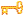
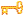
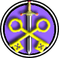

|

|
>> Содержание / Список кланов /
 Darkkey Darkkey
Яркая вспышка молнии осветила группу всадников, направляющихся в Рощу Смерти. Так ее назвали местные жители из окрестных деревень, так как все кто заходил в эту рощу уже не возвращался. Но видимо люди, ехавшие в такую ненастную ночь, не боялись чудовищ и ведьм,
о которых каждый вечер, сидя с кружкой мутного пива, рассказывали друг другу местные крестьяне. Отряд проследовал в глубь рощи и остановился у небольшого храма. Время истрепало это некогда прекрасное и величественное сооружение, но не разрушило его.
Несколько всадников спешилось, и быстро вбежали в храм. Через мгновение стрельчатые окна храма осветились огнем факелов зажженных внутри.
Еще двое человек слезли с лошадей. Один из них был Ученик, а другой – Учитель. И хотя Ученик был молод, он был очень сильным чернокнижником, он был даже сильнее многих своих учителей.
И ещё он был очень амбициозен и желал подчинить этот мир себе. Учитель же был стар, и все за что он боролся, так это то что бы его клан продолжал жить в этом мире и исследовать книги и манускрипты, написанные Темными мудрецами прошлых веков. Однажды он допустил ошибку, рассказав своему Ученику про храм, который был построен на месте заточения душ Тринадцати Демонов. С того дня Ученик забыл про сон и пищу, он готовился к ритуалу освобождения этих демонов. С их помощью молодой ученик намеревался взять власть над этим миром.
Учитель же пытался остановить его…
- Послушай меня,- с отчаянием в голосе прошептал старый Учитель,- ты нарушишь Закон о Равновесии, освободив этих монстров. Никто не имеет права вызывать в этот мир Первозданное Зло… Нас всех убьют в этом храме… Остановись, пока не поздно…
- Кого вы боитесь, Учитель?- воскликнул Ученик,- неужто этих мифических Хранителей Тьмы?
Ученик подошел вплотную к Учителю и посмотрел своими пылающими дьявольским огнем глазами в глаза усталого старого человека.
- Их не существует! А если и существовали когда, то они уже все передохли как бродячие собаки.
У меня тридцать лучших воинов нашего братства и они могут справиться с любым из этих так
называемых Хранителей…
Ученик презрительно сплюнул на каменный пол древнего храма и стал готовиться к ритуалу.
Начать ритуал он не успел…
Раскат грома заглушил крики, а последующая вспышка молнии осветила тела тридцати доблестных воинов, на которых возлагал свои надежды Ученик.
В дверном проеме храма появилась фигура в плаще с накинутым на голову капюшоне. Голова пришельца повернулась в сторону Учителя, но тот лишь упал на колени, моля о пощаде…
Но Ученик был молод и отважен, но совершенно безрассуден. Он выхватил меч и бросился на незнакомца в плаще. Едва уловимое движение пришельца… Тело Ученика продолжает двигаться вперед, но уже без головы и падает в дверях храма.
Незнакомец поднял голову Ученика, подошел к Учителю и бросил ее тому на колени.
- Я оставлю тебя живым, старик,- произнес глухой голос из-под капюшона.
Иди и передай всем, что попытка нарушить Равновесие будет караться смертью.
Незнакомец повернулся, что бы уйти, но старик нашел в себе смелость, что бы спросить.
- Вы Хранитель?
Рука пришельца скользнула под плащ, и в ней появился золотой ключ, символ Хранителей.
- Да, я Хранитель,- сказал незнакомец и бросил ключ Учителю,- он будет служить весомым доказательством того, что мы существуем…
Учитель посмотрел на ключ и когда он поднял глаза, то в храме уже никого не было…
Официальный сайт клана: http://www.dark-key.clan.su/
|
 |
|